AWD平台¶
国内目前能够提供AWD训练的平台：
-
上线不久的AWD功能，题目比较少但持续更新。
-
每隔一段时间会有官方AWD比赛，也可自定义比赛。
-
国内成熟的AWD供应平台，题目基数大。
-
定期会有排位赛，也可自定义比赛训练。
NSSCTF 使用¶
流程¶
请在进行比赛前仔细阅读平台规则。
报名比赛¶
登录NSSCTF平台后 在上方导航栏中选择 比赛
跳转到比赛页面后 在右侧功能区的 来源 选择 自定义竞赛
权限 选择为 公开 时 可报名公开比赛 私密 同理 但需要提供比赛密码。
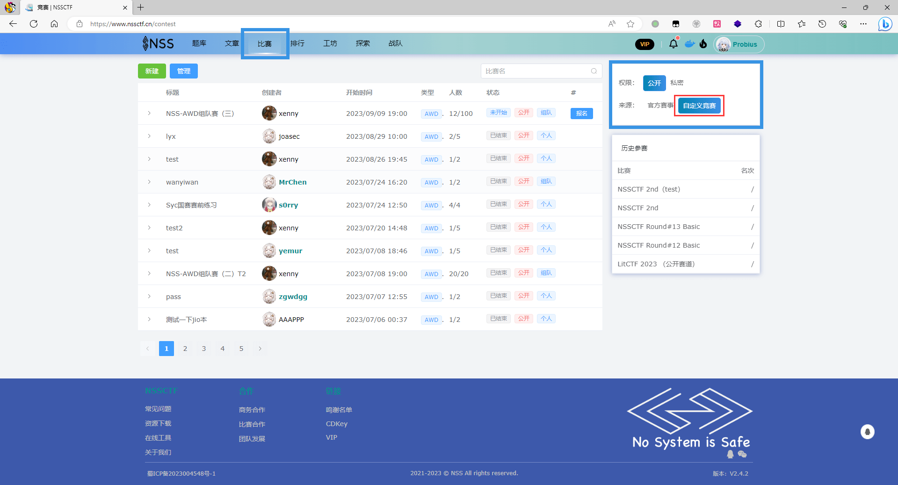
报名成功后，
在比赛开始前 点击 已报名 即可进入比赛界面 以配置队伍；
若比赛 已开始 或者 已结束 则点击绿色的 进入 可进入比赛页面
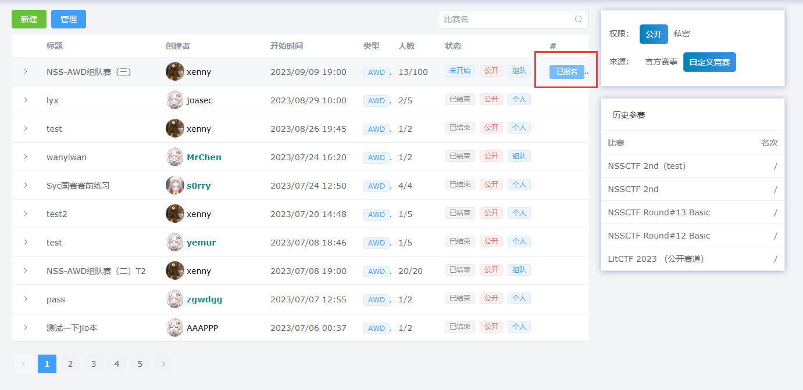
通过输入队伍token加入队伍。
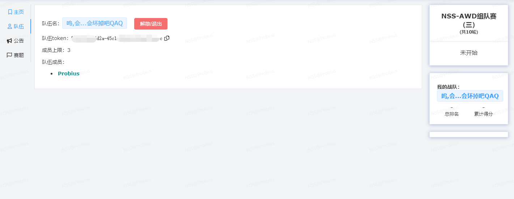
比赛开始后，点击 进入 按钮进入比赛
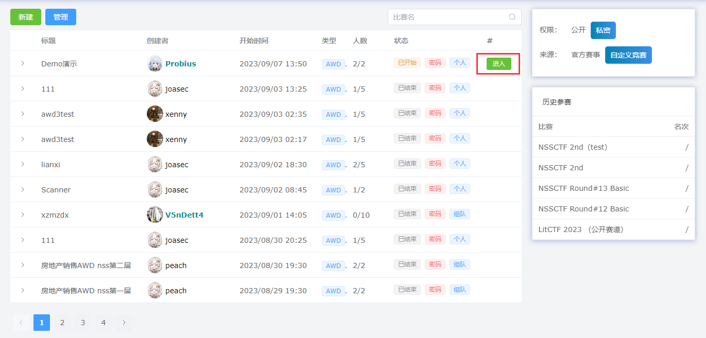
在比赛主页 会显示比赛信息，右侧会显示计分板。
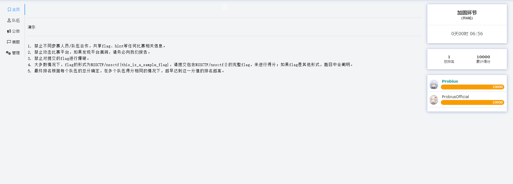
在赛题选项中查看队伍GameBox信息，计分板会一直跟随显示。
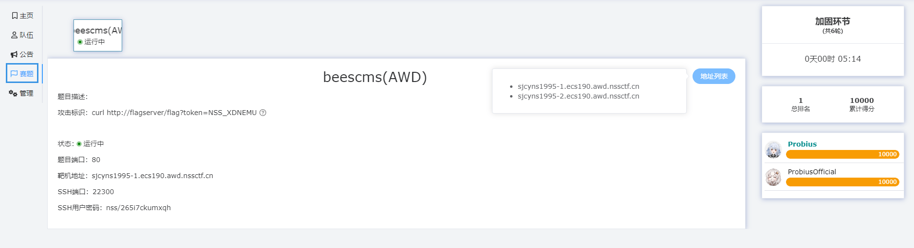
建立连接¶
beescms(AWD)
题目描述：NULL
攻击标识：curl http://flagserver/flag?token=NSS_XDNEMU
状态：
运行中
题目端口：80
靶机地址：sjcyns1995-1.ecs190.awd.nssctf.cn
SSH端口：22300
SSH用户密码：nss/265i7ckumxqh
对于该靶机，我们使用ssh如下指令可建立连接：
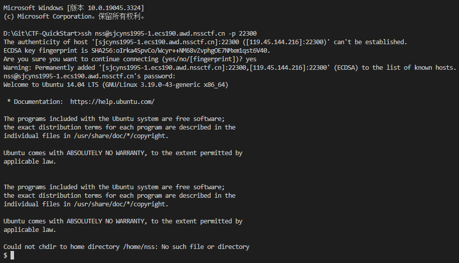
通常为了方便管理，我们会依赖一些ssh工具，因为他们会集成一些 诸如 文件下载 修改的交互功能。
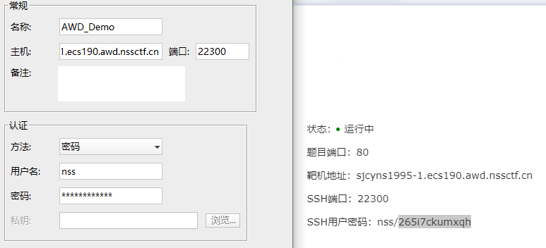
备份加固¶
通常我们选择将整个 www 文件夹 下载下来
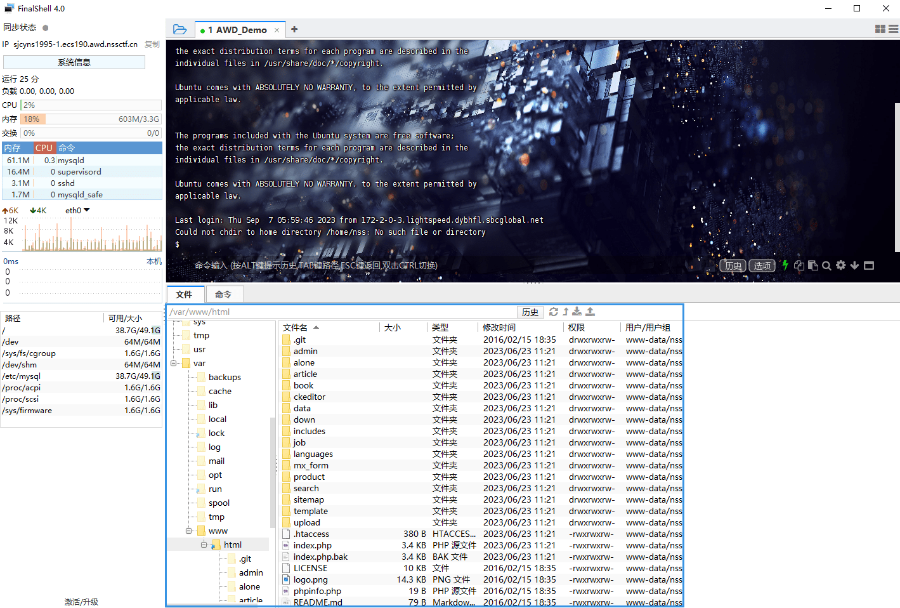
- 用作备份
- 本地审计加固
攻击得分¶
另一队视角：
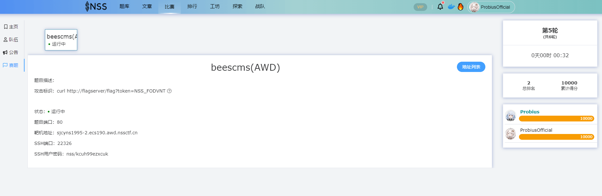
在对方机器上面任意能够执行命令的地方成功运行攻击标识时，我方得分，对方扣分 ( NSS平台目前为被攻击不扣分) ：
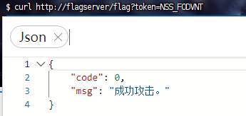
攻击成功后，在服务器check后则会反应得分情况：（分数数据会稍有延迟）
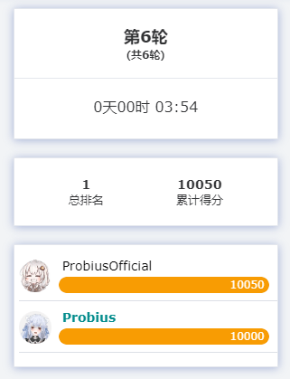
每一轮中，对每个队伍只能攻击成功一次：
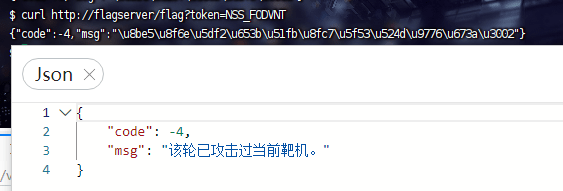
规则¶
见 [ Version 2.4 更新说明 ] ，内容如下：
- 在NSS AWD中，你只需要向
flagserver发送相应的请求即算攻击成功。例如题目界面为
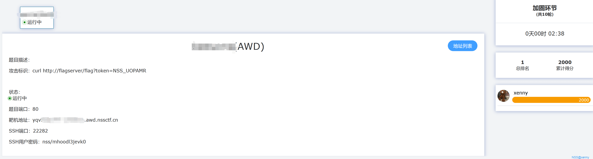
- 这里你只需要成功入侵其他队伍/人员靶机后发起这个请求即算攻击成功，你可以通过flagserver的返回内容判断是否攻击成功，响应如下
code: 0, 攻击成功
code: -1, 参数不全，例如token没有带上
code: -2, 无效的Token参数，请检测token是否正确或者是否被过滤
code: -3, 您不能攻击自己的靶机
code: -4, 该轮已攻击过当前靶机，每轮只会有一次请求会被判定为有效攻击
code: -5, 还未到攻击时间
code: -999, 其他错误
- 开赛后你可以通过SSH服务登录自己（队伍）的靶机进行源码下载、防御部署等服务。每个队伍的SSH端口和密码都不相同，你可以通过下列命令进行登录
- 同样你也可以使用其他SSH管理软件进行访问。
- 你不需要扫描其他服务器的地址 ，可在题目界面右侧获得本题所有 靶机地址 （包括自己的也在内）用于编写自动化脚本。
- 同时所有题目除了 题目端口 和 SSH端口 外，其他端口上不包含任何题目相关信息。你不需要对靶机服务器发起端口扫描。
- 攻击成功的反馈不会实时更新在页面上，你可以通过上述提到的flagserver返回内容来进行判定。
- 服务器会在每轮 随机 时间对靶机进行检查，检查内容包括但不限于
- 特定内容是否存在
- 特定功能是否可用
- 特定流程是否完整
- 任意一项检查不可用时将会判断服务器为宕机，并进行扣分，服务器状态会在每轮结束时进行更新，请不要对靶机上的正常功能或题目描述中指定的特殊内容进行修改，被判定宕机你可以通过备份更新等操作重新恢复（服务器状态不会立即更新，同样是在每轮结束时进行更新）